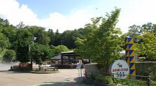
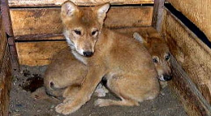
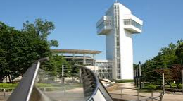
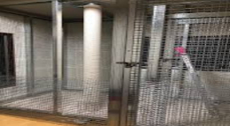

2019
8/7

我が動物園のホームページに書かれている、ezooの仲間たちのオットセイの紹介にも少し書いておりますが、今回はより詳しくアザラシとオットセイの違いについて書いていきたいと思います。ぱっと見は飼育員である私たちもわかりにくいです。泳ぎ方の見分け方については、もうホームページで説明していますが、他には人間でいう耳の部分が微妙に違うのです。オットセイには穴が開いていますが、アザラシには穴が開いていないのです。後は、中々見せられる機会はないと思いますが、潜水能力も大分異なります。オットセイは200ｍくらいの潜水に対して、アザラシはなんと1500ｍ程潜れるのです。こんなに潜られたら誰も手出しはできませんね。もしかしたらアザラシはもう、未知の深海生物を見ているかもしれません。それでは今日はこの辺で、24時間動物園に来られる方は是非是非見に来てね︕
Posted by 北関


2019.08.02
24時間動物園準備開始

2019.07.30
ニホンオオカミは元気に過ごしております

2019.07.23
苫小牧も暑い時期になってきました

2019.07.09
ホッキョクグマの受け入れの飼育場所紹介